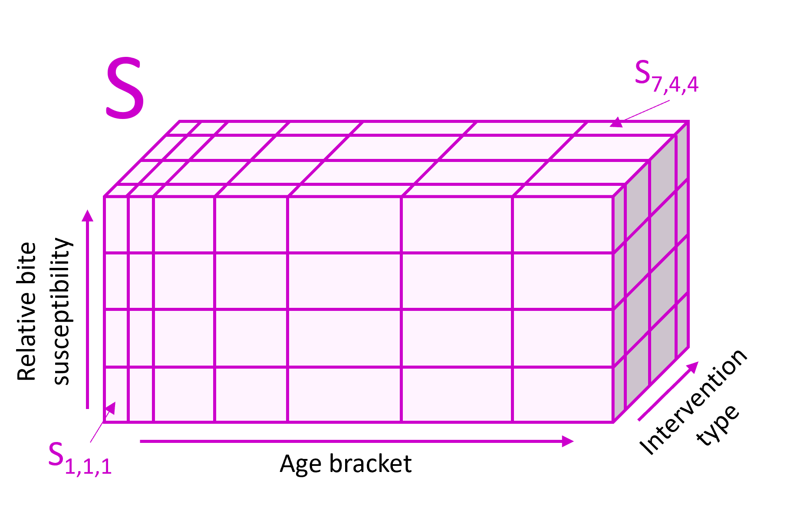

malariasimple is a time-discrete, compartmental
approximation of the individual-based malariasimulation
model. This vignette provides a high level overview of the human model
as it is most different from malariasimulation. An overview
of mosquito biology can be found here.
A more comprehensive overview can be found in Griffin
et al. 2010 (especially Supplementary Information - Protocol 1).
The Model
malariasimple models the target population as divided
into seven compartments defined by disease status. These are:
- S - Susceptible
- D - Untreated disease
- A - Asymptomatic infection
- U - Sub-patent infection
- T - Treated disease
- P - Uninfected, prophylactically protected.
Each disease compartment is divided into many subcompartments along three axes according to:
- Age-bracket
- Relative bite susceptibility
- Intervention type
They are not necessarily the same width.

Susceptiblity sub-compartments
Within each human sub-compartment, the population is considered a homogeneous unit. Population is defined as a fraction of the total population such that the sum of all compartments across all disease states at a given timestep will always equal 1.
Note on intervention compartments
The population proportion in each compartment is defined in the input parameters, and will stay constant throughout the simulation. Hence, the proportion in each intervention category does not necessarily represent the proportion receiving an intervention at any given time, but rather the population who will receive the intervention at some point during the simulation. In the case of SMC, treatments are only applied to compartments that are in both SMC intervention types and SMC-eligible age-brackets. Hence compartments in the SMC intervention type that are over the maximum SMC age at the first SMC administration will never receive SMC.
Human Transitions
1. Transitions between disease states
At each timestep, some proportion of the population will move between disease states. Transitions occur between corresponding subcompartments (i.e. S111 –> D111)
2. Birth and Death
New births occur into the susceptible state, across sub-compartments
within the youngest age group. malariasimple currently
assumes an exponential population distribution and no malaria-caused
deaths. As such, the death rate is equal across all compartments and
sub-compartments. New births equal total deaths in each time step, hence
the population remains constant.
Speed / Accuracy Trade-Off
malariasimple permits significant speed gains compared
with malariasimulation, however it is an approximation and
outputs can deviate from more mathematically exact solutions.
malariasimple contains several tuneable parameters defined
in the get_parameters() function which can be changed to
alter the balance between simulation speed and mathematical accuracy of
the output. Tuneable parameters are:
-
tsd(time steps per day, default = 4) -
biting_groups(number of biting heterogeneity compartments, default = 3) -
lag_rates(sub-compartments approximating the delay in FOI, default = 10) -
age_vector(stratification of age groups, default = [0, 0.25, 0.5, 1, 1.5, 2, 2.5, 3, 3.5, 4, 5, 6, 7, 8.5, 10, 20, 30, 40, 60, 80] x 365 days)
Increasing the number of time steps or compartments will all add to runtime but may improve accuracy.
Note: tsd, biting_groups and lag_rates are fairly
optimally set in the defaults, and increasing their resolution will
likely increase runtime for limited accuracy gains. If you are looking
to more closely approximate malariasimulation, the first
attempt should be to increase resolution of the age_vector.